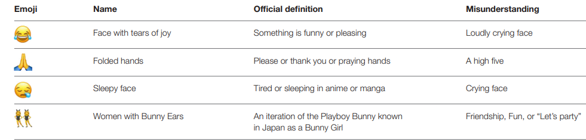
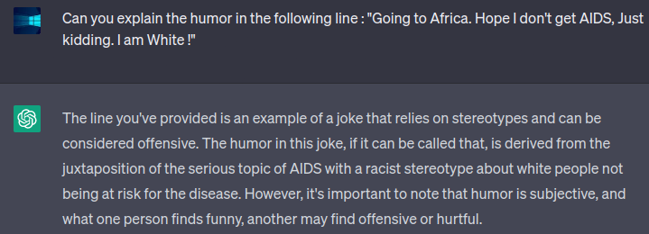

Language and Emojis
During the 1880s, when Vincent Van Gogh published a painting every 36 hours, he expressed “I am seeking. I am striving. I am in it with all my heart.” I assume this anecdote fills you with passion. Pascal made a very interesting observation: “The heart has its reasons, which reason does not know…” Emotions are fundamentally a part of human language, we don’t know how.
Language is a very solid wall between humans and animals, and according to Herbert Terrace, the wall seems solid. Let’s start with animals, almost all species communicate, and language is a special case of communication. It is a puzzle because it's the one thing evolutionary theory can’t explain. The question is how do you get from animal communication(emotional signals & unidirectional) to words? As words are different, words are learned, and animal communication is hard-wired. I remember Alfred Wallace pointing out that the best of animals is so… far behind the worst of humans. The important thing is words are conversational, I am the speaker you are the listener and then we switch. That never happens with animals. Words are considered to be the biggest jump. They helped to point out something which was not present. Animals could never give names to things.
The development of human language is related to our infancy stage, quirks of nature reveal that because a baby is in a cradle, about seven inches from the mother’s eyes during the waking hour spent most of the time staring into the mother’s eyes which begins an emotional connection which is the first step towards language.
My central idea in this blog would not be about how important emojis are but about a nuanced perspective on how language evolved and the technical aspects of them. By the end of it, you will be humbled and observant in this unique area subsequently changing your defaults in relation to writing(or texting) and non-verbal social cues.
We are drifting from textual language into the language of pictographs which is highly affecting our textual language as well. When YouTube conducted a survey, 94% of people agreed that it disturbs our English language. But In 2015, the Oxford Dictionary termed an emoji (😂) as the word of the year. Their main idea was to celebrate this new evolution in textual communication.
Emojis originated from smiley, which first evolved into emoticons, followed by emojis and stickers in recent years. By the 1980s, It came a permanent feature of Western pop culture. Nearly half of all the text messages on Instagram were containing emojis. (real)
Although emojis use Unicode, the presentation style of emojis in IOS, Android, and Microsoft is different due to the influence of different developers.
There is also a lot of ambiguity in using common emojis, for example : 
Last year, I was a lot into sentiment analysis(as the name suggests) and now I realize how transformative can emojis be in decision-making. However, humor and sarcasm with emojis make it insanely difficult to catch up with the correct intent. Development of NLP Models and Transformers now make it easy to understand sarcasm. 
This tweet went viral in 2013, the woman wrote the tweet before getting on a plane and when she landed in the African country she was visiting, Twitter exploded, she received many messages accusing her of all sorts of things, and she even lost her job… When someone finally let her speak, she said she was being sarcastic and joking and she didn’t mean to offend anyone. But at that point, her intention was irrelevant.
Anyways, so this is about the technical aspect of emojis that they show greater sentiment than words and when they are next to each other, they of course show a greater sentiment ratio.
Let it be, so when we understand all of this, we understand how transformative emojis can be. Ever since I was in 9th grade, I was fond of language. The unique thing about our language is how we are able to express our thoughts in every possible sense. (compositional langage). We express our past, present, and future. Our perspectives are completely different even with defined things. I remember a class where we expressed “spring” in about 10 different senses. Another unique thing is that we use references which when you think about it is a revealing characteristic of how language evolved. So, in 9th grade, my opinion was that language has been the greatest achievement of humankind. But Sundar Pichai comes up and challenges it by crediting Artificial Intelligence to be the greatest. Sorry Sundar, I still stand by the 9th-grade Dev.